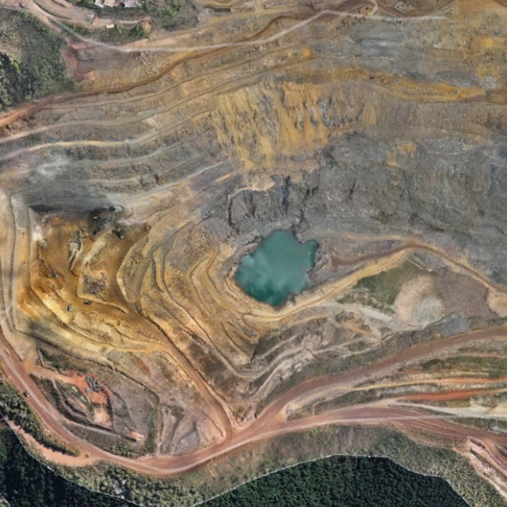

Visão geral
Rotinas, coletas, alertas e sincronização em uma central de campo.
Nuvem Ativa
Atualizado agora
MN
Maycon N.
MDSync Campo
Coleta digital geotécnica em rotina guiada
Checklists, leituras, evidências, localização e fila offline em um fluxo único para operação de campo.
Identificação da estrutura
Leitura INA/PZ
Foto, GPS e assinatura
Sincronização pronta
Total de Instrumentos
18
Leituras Centralizadas
142
Instrumentos em Alerta
2
Inspeções Pendentes (Sync)
0
Atividades Operacionais do Dia
Cronograma de Campo Integrado • Hoje
1.697 tarefas (PCM Oficial)
Leitura de Instrumentos
Piezômetros, INA, Medidores de Vazão
Meta do Dia
38 instrumentos
Progresso
100%
Coleta de leituras de nível d'água, pressão neutra e vazão em conformidade com o cronograma geotécnico.
Registro Fotográfico
Taludes, Bermas, Drenagem & Crista
Estruturas Alvo
10 estruturas
Fotos Registradas
12 fotos
Evidências fotográficas georreferenciadas dos pontos de controle, canaletas e taludes para o acervo técnico.
Monitoramento Sensorial
Inspeção Visual de Segurança
Itens Avaliados
14 itens
Estabilidade
Sem Anomalias
Inspeção rotineira de trincas, surgências, abatimentos, carreamento de finos e integridade de vertedouros.
| Data Planejada | Estrutura | Atividade / Ação Geotécnica | Categoria | Equipe / Ciclo | Status | Ação de Campo |
|---|
Monitoramento Pluviométrico & Climatológico (PCMI)
Base Oficial: PLUVIOMETRIA.xlsx • 4 Estações de Monitoramento • 02/09/2026
14.127 medições
72h Estável (< 50mm)
Histórico Recente de Chuva Diária por Estação
Coletor de campo: Nauberty| Data | Estação | Precipitação Diária | Acumulado 72h Estação | Nível de Risco | Responsável |
|---|
Mini Dashboard de Inspeções Realizadas
Histórico Geral
Total Realizadas
0
Sem Anomalias
0
Com Apontamento
0
Críticas / Alerta
0
Últimas Inspeções de Campo Concluídas
| Data/Hora | Estrutura | Inspetor | Condição Geral | Anomalias Apontadas | Evidências |
|---|
Anomalias & Alertas Recentes
0 alertasCarregando anomalias e alertas de estabilidade...
Rotina Operacional Diária & Cronograma PCM
Planejamento e Controle de Manutenção Geotécnica · ITAMINAS
Atividade do Dia
Programada
Carregando atividades...
Verificando banco de dados do cronograma PCM...
Ciclo 1
Monitoramento
1 atividade no dia
Estrutura a Inspecionar
Inspeção Hoje
PILHA JACÓ
Inspeção de campo, elaboração de formulário e atualização cadastral.
Setor: Mina Central
Risco: CRI Médio / DPA Alto
Clima & Pluviometria
Solicitação Pendente
23°C
Sarzedo / Mina Engenho Seco · Parcialmente Nublado
Ação Obrigatória do Dia: O cronograma exige a coleta diária do acumulado pluviométrico de 24h.
Última coleta: 0.0 mm (Coletor: Nauberty Santos)
Painel Executivo · Cronograma PCMI
Atividades no Mês
0
Concluídas
0
Em Atraso
0
Ações Futuras
0
Setembro 2026
Concluído
Realizado c/ atraso
Ações futuras
Reprogramada
Dom
Seg
Ter
Qua
Qui
Sex
Sáb

Radar & Localização
IBIS-FM EVO 01
Base Sul • Cota 1.140 m (Cava Jangada)
Alvo Crítico (AOI_01)
Crista Talude Superior
Setor N_Sup_1231.44 (204.5 m²)
Status TARP Atual
NÍVEL 3 (CRÍTICO)
Interdição preventiva da crista e base
Pico de Cinemática (Vetor)
20.00 mm
v_max: 2.78 mm/h (06/Sep 19:23)
Ortofoto e Mapa de Calor do Radar Hexagon Max Vector: 20.00 mm
Radar Interferométrico GB-InSAR IBIS-FM Guardian • Cava Jangada (05/09 a 06/09/2026)

mm
+20.00
+12.00
+4.00
0.00
-4.00
-12.00
-20.00
Parecer Técnico do Analista de Dados Geotécnicos
TARP NÍVEL 3 (CRÍTICO)
1. Diagnóstico Geomecânico e Cinemática: A análise combinada das varreduras interferométricas do radar Hexagon IBIS-FM EVO 01 comprova anomalia deformacional severa localizada na crista e terço superior do talude principal da Cava Jangada. O vetor máximo acumulado atingiu o limite de saturação da escala operacional de 20.00 mm em direção à linha de visada (LOS positivo).
2. Validação da Série Temporal e Correção Atmosférica: O setor de controle Area_at_Oeste exibiu estabilidade milimétrica com oscilação contida entre +0.08 mm e -0.42 mm (média de -0.25 mm), atestando a robustez dos filtros APS (Atmospheric Phase Screen) e descartando falsos positivos climáticos.
3. Ausência de Deflagrador Pluviométrico: A precipitação registrada foi de 0.0 mm no período, confirmando que o mecanismo de movimentação está associado ao alívio tensional da escavação e descontinuidades estruturais do maciço, e não a saturação hídrica imediata.
4. Deliberação Operacional: Manter isolamento físico imediato da crista e da berma inferior na projeção de queda de blocos. Acompanhamento rigoroso da taxa horária de deformação e velocidade inversa de Fukuzono (1/v) para predição de ruptura.
Parâmetros Críticos do Maciço
06/Sep 19:23
Deslocamento Máx.
20.00 mm
Vetor Acumulado (LOS)
Setor de Controle
-0.25 mm
Área Oeste Estabilizada
Chuva no Período
0.0 mm
Ausência de Precipitação
Classificação TARP
NÍVEL 3
Interdição e Evacuação
Estabilidade Bishop:
FS = 1.12
Velocidade Inversa (1/v):
0.360 h/mm
Atualizações Técnicas e Boletins do Radar
18 MensagensChecklist de Inspeção de Estabilidade
Coleta isolada de estabilidade selecionada.
Guia Geotécnico de Bolso
Como identificar PIPING ativo?
O piping ocorre quando a água percola pelo maciço carregando partículas finas de solo. Observe a surgência de água: se a água estiver turva ou houver um cone de areia fina se formando ao redor do ponto, classifique imediatamente como risco ALTO.
Classificação de trincas de tração
Trincas longitudinais (paralelas à crista) costumam indicar acomodação natural do maciço. Trincas transversais (perpendiculares à crista) ou trincas em meia-lua com degrau são indicativos graves de descolamento de talude.
Leitura Correta do PZ de Corda Vibrante
Insira sempre a leitura direta da unidade de leitura (Readout). O MDSync converterá a frequência (Hz) ou dígitos do transdutor de pressão utilizando a constante de calibração k cadastrada no banco de dados.
CheckList Veicular
Modelo operacional: Survey123 "Checklist Veicular - Diário"
Plano de Ação Corretiva & Tratativas (MD Hub - Tratativas)
Gestão do ciclo fechado para anomalias de campo: identificação, mitigação, prazos e comprovação de fechamento com evidências.
0
Total Ações
0
Pendentes
0
Em Tratamento
0
Concluídas
0
Prazo Vencido
| ID | Estrutura | Anomalia / Desvio | Ação Recomendada | Responsável | Prazo | Prioridade | Status | Ações |
|---|
Total de Leituras
3.094
Série histórica consolidada
Instrumentos Ativos
218
PZ, INA, NA, Medidores de Vazão
Estruturas Cobertas
8 Estruturas
Barragens e Pilhas de Estéril
Conformidade TARP
98.6% Normal
Critérios Bo & Barrett (2023)
Histórico Completo de Instrumentação & Inspeções
Base integral de leituras de campo, piezometria, cotas de reservatório, vazões e checklists de todas as estruturas.
Registros Filtrados:
Carregando...
Exibindo histórico de todos os instrumentos da mina
| Instrumento / ID | Estrutura | Tipo | Data & Hora | Leitura / Vazão | Cota / Nível (m) | Poro-pressão | Inspetor | Status TARP | Ações |
|---|
Relatórios e Evidências para Auditoria
Filtro rápido por estrutura
Selecione uma estrutura para montar o relatório e exportar somente os dados dela.
Registros filtrados
0
Alertas / críticos
0
Registros com evidência
0
Estruturas cobertas
0
Pacote para auditoria
Selecione filtros para gerar o pacote.
Período completo
Auditoria
| Data | Estrutura | Elemento | Tipo | Valor / Risco | Status | Evidência |
|---|
Histórico de Emissões & Rastreabilidade de Auditoria
| Data / Hora | Usuário / Responsável | Estrutura Filtrada | Formato | Finalidade | Registros | Protocolo Hash | Status |
|---|
Indicadores Dinâmicos por Estrutura
Base PCMI Oficial
C:\Users\maycon.nascimento\ITAMINAS\SPLO - General\03) Geotecnia\01) PCMI
Registros
0
Taxa de alerta
0%
Estruturas ativas
0
Última atualização
-
Volume por estrutura
Status dos registros
Tendência mensal
Anomalias e riscos
Quadro de indicadores por estrutura
| Estrutura | PZ | INA | NA | MV | Inspeções | Alertas | Anomalias positivas | Último registro |
|---|
MDSync GeoView 3D
Mina Cava Jangada • IBIS-FM EVO 01 Ativo
Offline Ready (Cache 100%)
mm
+20.00
+12.00
+4.00
0.00
-4.00
-12.00
-20.00
Azimute: 14.8°
Inclinação (Pitch): 42.5°
Exagero Vertical: 1.5x
ALVO CRÍTICO • AOI_01
TARP N3
Crista / Setor N_Sup_1231.44 (Cota 1.231m)
Deslocamento Acum.
+20.00 mm
Velocidade Atual
2.78 mm/h
PZ-02 (Talude Norte)
438.75m
PZ-01
438.75m
PZ-04
412.10m
INA-01
1.131,80m
MED-02
0.42 L/s
MS-08
Atenção N1
IBIS-FM EVO 01 (Cota 1.140m)
JGD Oeste (INTERDITADA)
MAQ 876 • Cota 1231m • AOI_01
JGD Leste (D&B)
Perfuração & Desmonte
Fundo Cava (MAQ 908)
Fe 63.61% • Alto Teor
Pilhão Norte (18m)
Alerta: Material Solto
N
S
L
O
Ver Dashboards de Pilhas e Arquivos Corporativos Associados
INDICADORES GEOTÉCNICOS DE PILHAS
GeoView
ESTRUTURA
ANO
MÊS
ANÁLISE
GEOMETRIA
DECLIVIDADE X LIMITE CONFORMIDADE
LOCALIZAÇÃO
Selecione uma estrutura no mapa.
EMPOÇAMENTO
FATOR DE SEGURANÇA
FATOR DE SEGURANÇA PLANO DE LAVRA
GeoView - Dashboards corporativos
Pasta fixada
-
Mapeamento Georreferenciado GIS da Mina
Referência Oficial: ESTRUTURAS GEOTEC.kmz • SIRGAS 2000 / UTM Zona 23S (EPSG:31983)
Estrutura Geotécnica
Normal (< 70% limite)
Atenção (70% - 90%)
Crítico (> 90%)
Clique em qualquer ponto para inspecionar ou transicionar a câmera.
Conversor e Coordenadas Geodésicas
Posição Geodésica
SIRGAS 2000 / UTM 23S (EPSG:31983)
Datum SIRGAS 2000 (GRS80) • Coordenadas métricas em Projeção Universal Transversa de Mercator.
-
Instrumentos e Alertas da Estrutura
Visão Geral
Instrumentos
0
Normal
0
Atenção
0
Crítico
0
Registros de Campo Georreferenciados
| Data | Estrutura | Elemento | Tipo | EPSG | Coordenada UTM | Precisão | Qualidade |
|---|
Central de Acesso, Login & Autenticação de Operadores
Controle integrado de identidade geotécnica, reconhecimento instantâneo de equipe, registros de campo e auditoria corporativa.
Base Local Ativa
4 Operadores Registrados
Operador Conectado
Sessão AutorizadaMN
Maycon Nascimento
Eng. Geotécnico Sênior @adminAcesse com suas credenciais
Entre com seu usuário ou e-mail corporativo cadastrado para reconhecimento instantâneo no site e app.
Contas padrão para acesso rápido de teste:
admin / admin123
geotecnia / geo2026
campo / campo123
auditoria / auditoria2026
Base de Usuários Cadastrados no Sistema
Contas reconhecidas pelo MDSync com histórico de acesso e credenciais seguras locais.
| Operador / Usuário | Função / Cargo | Cadastro | Último Acesso | Ação |
|---|
Quadro de Colaboradores & Fluxograma Setor Geotecnia
Superintendência de Infraestrutura e Geotecnia · Gerência de Geotecnia · ITAMINAS
Maycon Douglas
Operador Ativo de CampoTécnico de Pilhas de Estéril e Futuras · CFT-MG 184.920
Rubrica digital vinculada aos checklists e telemetria de campo.
Diretoria & Superintendência
Cargo de Liderança
Cargo Analítico
Cargo Operacional
Sincronização e Conectividade
Pronto para Enviar
Existem registros na memória local aguardando upload.
Base corporativa monitorada
C:\Users\maycon.nascimento\ITAMINAS\SPLO - General\03) Geotecnia\01) PCMI
EstadoAguardando autorização
Arquivos lidos0
Novos/alterados0
Última verificação-
Conecte a pasta para monitorar arquivos novos durante esta sessão.
Coleta local
Fila offline
Nuvem
Fila de Upload Local
Parâmetros da Mineração
Definido pelo comitê técnico no PIE (Plano de Ação de Emergência).
Alterações salvas neste dispositivo
Versão Embarcada
MDSync Mobile Client v2.4.1 (Modo Offline Baseado em LocalStorage & Cache Offline).

{kind=link}
{kind=link}